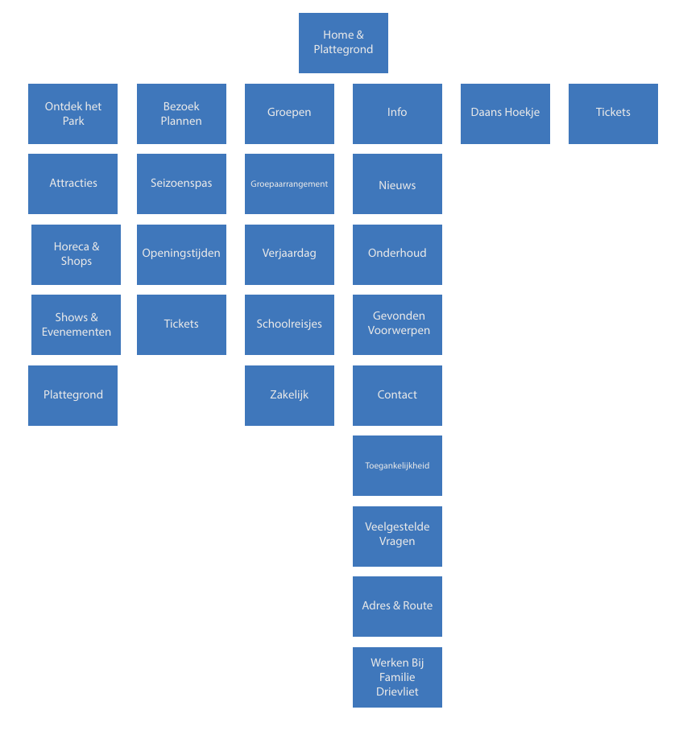
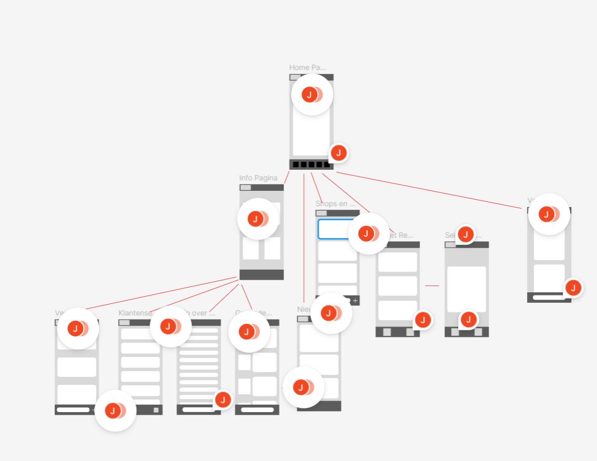
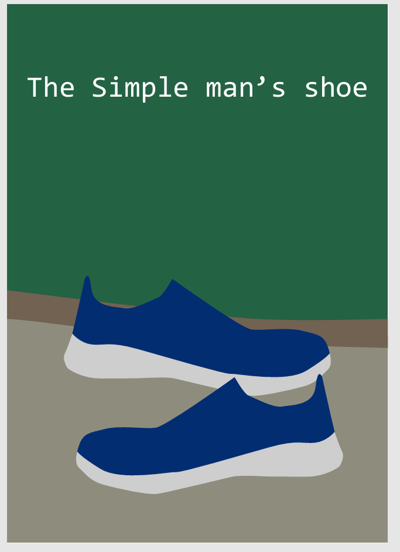
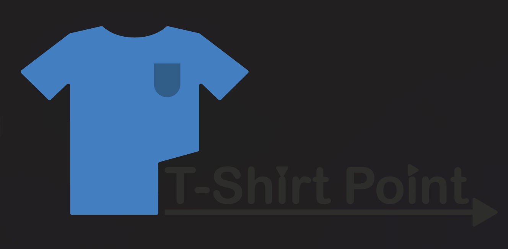
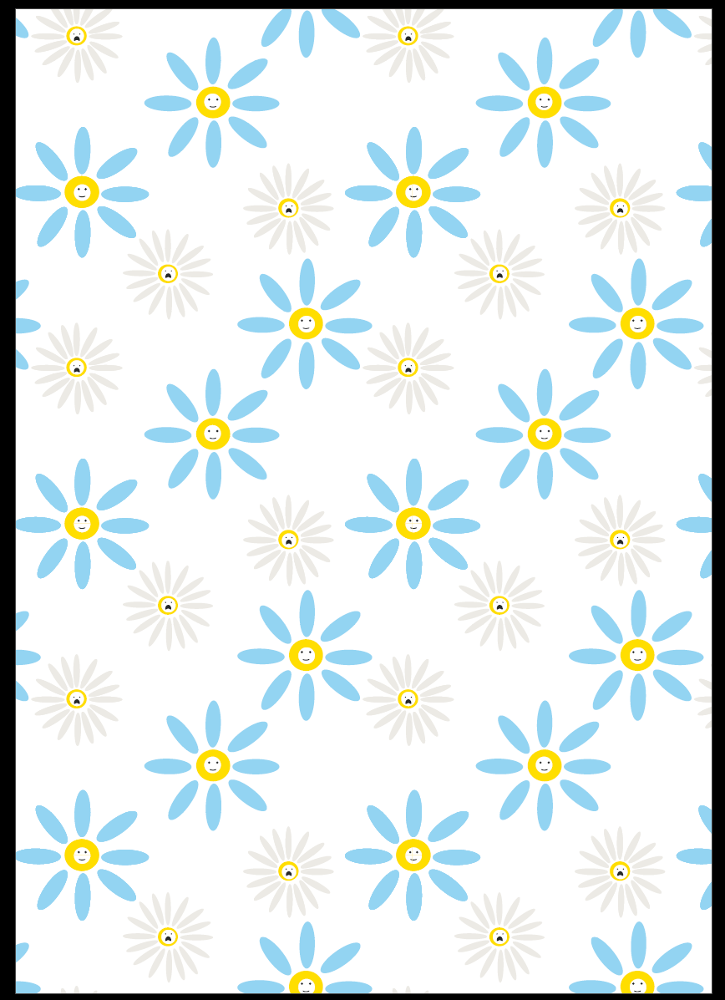
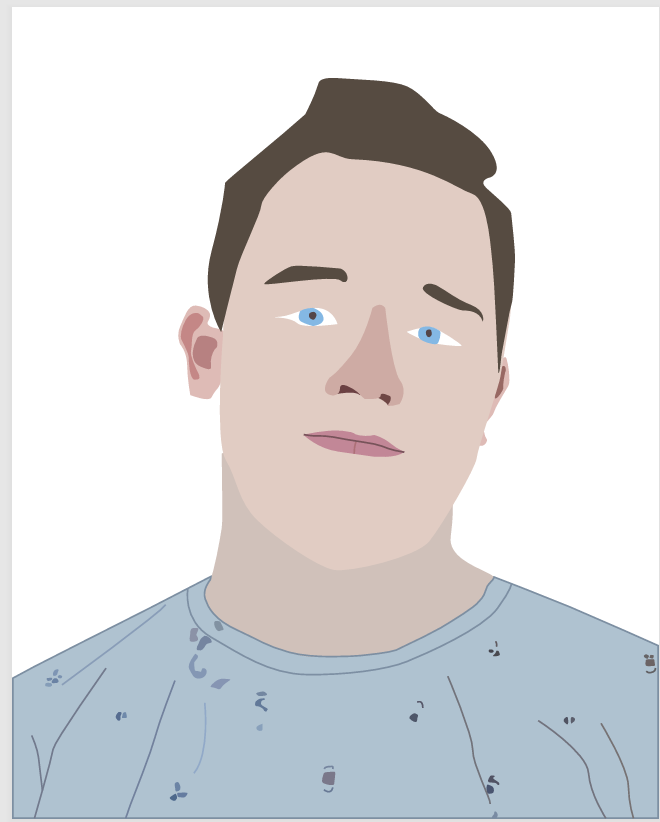

.svg)
.png)
Dit is een filmposter die ik gemaakt heb voor school. Het is gebaseerd op de filmposter van de film "Raise the Titanic" uit 1980. Hierbij heb ik gebruik gemaakt van Photoshop en Adobe Firefly (de Image generator van Adobe). Deze opdracht heb ik gemaakt in periode 1 van mijn eerste jaar.

Dit is de sitemap van een project dat ik heb gemaakt voor school. Hierbij heb ik een app-versie van de drievliet website gemaakt. Dit project heb ik in periode 4 van mijn eerste jaar gemaakt.

Dit is de wireframe van de mobiele app die ik heb gemaakt. Hierbij heb ik gebruik gemaakt van figma

Dit is een poster die ik voor een weekly design challenge heb gemaakt. Hierbij heb ik onderzoek gedaan naar verschillende stijlen. De poster is gemaakt in een minimalistische stijl. Deze opdracht heb ik gemaakt in periode 2 van mijn eerste jaar

Dit is een namaak van de voorpagina van de Stellaris Wiki die ik heb gemaakt in Figma. Hierbij heb ik via Google plugins de afbeeldingen en de lettertypes van de site afgehaald, daarna een wireframe gemaakt en als laatste de site zelf nagemaakt. Dit heb ik gemaakt in periode 2 van mijn eerste jaar.

Dit is een namaak van een poster van het T-huis in Breda. Hierbij heb ik gebruik gemaakt van InDesign en een voorbeeld van de poster. Deze opdracht heb ik gemaakt in periode 1 van mijn eerste jaar.

Dit is een logo die ik heb gemaakt voor een groepsopdracht waarbij we een site moesten maken voor een bedrijf dat T-shirts maakt. Hierbij heeft mijn groep rekening gehouden met de sportieve uitstraling van zo'n website. Deze opdracht heb ik gemaakt in periode 4 van mijn eerste jaar.

Dit is een patroon die ik heb gemaakt in Adobe Illustrator. Hierbij heb ik onderzoek gedaan naar verschillende patroon soorten en dit patroon is wat daar uitkwam. Deze opdracht heb ik gemaakt in periode 3 van mijn eerste jaar.

Dit is een zelfportet die ik heb gemaakt in Adobe Illustrator. Ik heb hiervoor een foto van mezelf overgetrekt en daarna gestyled. Deze opdracht heb ik gemaakt in periode 1 van mijn eerste jaar